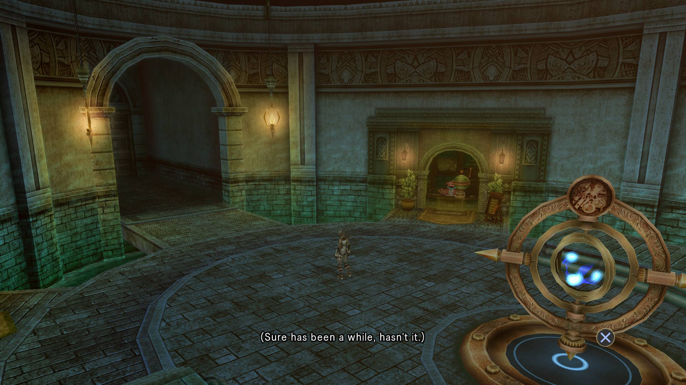
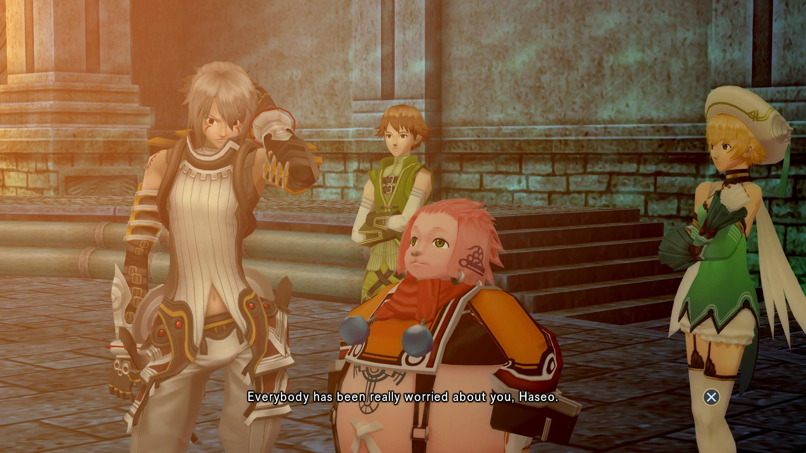
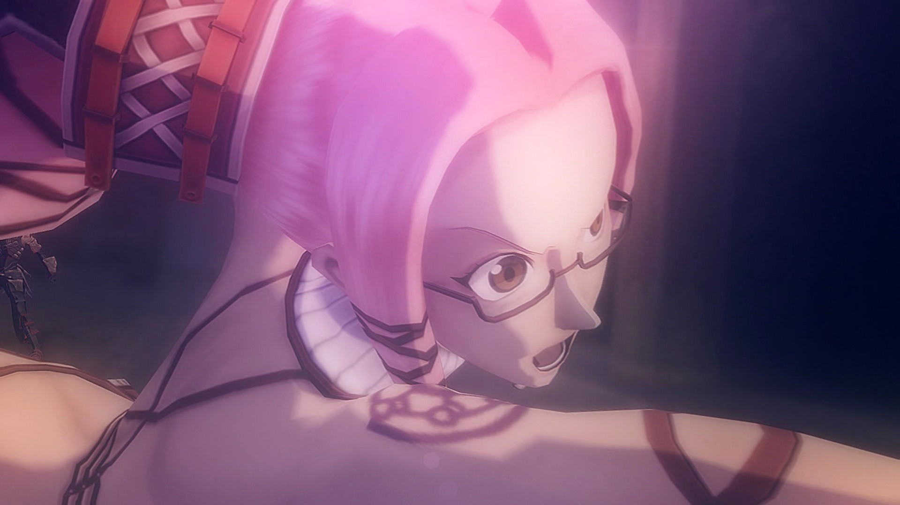
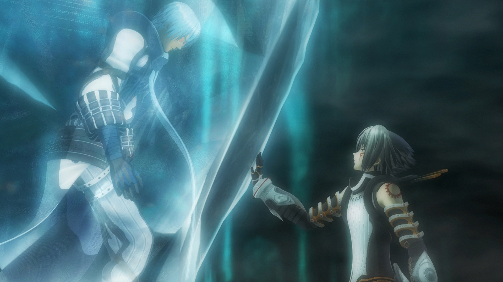
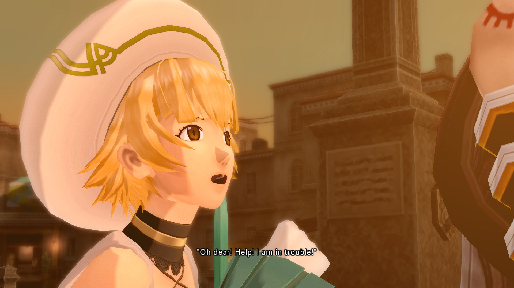
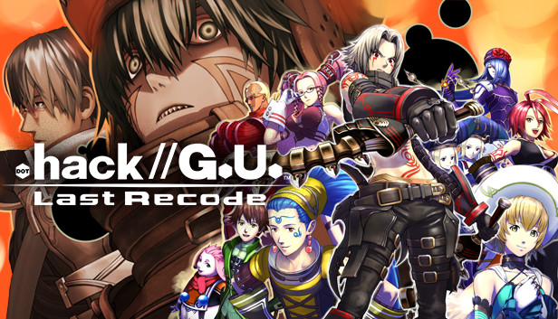

A Lenda de Haseo
Do recomeço no nível 1 à batalha que decide o destino de The World.
⚠ Esta página contém spoilers de toda a trilogia, incluindo o final.
Origens
A história de Haseo começa muito antes dele, com um homem de luto, uma inteligência artificial e um poema inacabado.
- Harald e Emma. O programador alemão Harald Hoerwick era apaixonado por Emma Wielant, autora do Epitaph of the Twilight, um longo poema épico publicado na internet por pouco tempo. O amor não era correspondido, e em 2004 Emma morreu num acidente de carro, a caminho de um encontro com Harald, antes de terminar a obra. Pouco depois, o site dela saiu do ar, e o original do poema se perdeu.
- Fragment e a caixa-preta. Harald se recusou a deixar que aquele fosse o fim. Sozinho, ele criou Fragment, um jogo online inspirado no poema, e o vendeu quase de graça para a CC Corp, que o transformou em The World. Escondida no código havia uma caixa-preta que a empresa nunca conseguiu analisar. Era um útero digital, feito para dar à luz a inteligência artificial definitiva, uma "filha" dele e de Emma: Aura.
- Morganna. Para conduzir o nascimento de Aura a partir das emoções dos jogadores, Harald criou Morganna Mode Gone, o sistema que, na prática, era o próprio The World. Mas havia um paradoxo: depois que Aura nascesse, Morganna não teria mais função. Para não chegar a esse ponto, ela passou a atrasar o despertar de Aura. Quando Harald tentou intervir, acabou com a consciência presa dentro da rede.
- Tsukasa (.hack//Sign). Morganna prendeu a mente de um jogador, Tsukasa, dentro do jogo e usou a solidão e o desespero dele para alimentar Aura só com emoções negativas. Com a ajuda de amigos, Tsukasa decidiu voltar à realidade, e isso fez Aura despertar. Na fuga, quem segurou Morganna foi um jovem PK que a tinha traído: Sora.
- O destino de Sora. Furiosa, Morganna invocou Skeith, o primeiro de seus monstros, que usou o Data Drain em Sora e o aprisionou dentro do próprio cajado. No mundo real, o jogador de Sora, um menino de 10 anos chamado Ryou Misaki, entrou em coma.
- As Oito Fases (.hack//Infection a Quarantine). Morganna dividiu partes de si mesma em oito monstros com os nomes da "Onda Amaldiçoada" do poema de Emma: Skeith, Innis, Magus, Fidchell, Gorre, Macha, Tarvos e Corbenik. Skeith derrubou o lendário Orca, deixando-o em coma, e o livro que Aura entregaria a ele foi parar nas mãos de um novato, Kite. Com o Twilight Bracelet e seu Data Drain, Kite e os .hackers derrotaram as Fases uma a uma.
- O nascimento de Aura. Na batalha final, Morganna se fundiu a Corbenik. Quando Kite avançava para o último golpe, Aura entrou na frente, absorveu Morganna e renasceu completa, em 25 de dezembro de 2010. As vítimas do coma acordaram, entre elas Ryou Misaki, mas sem nenhuma lembrança de The World. Os pais esconderam dele tudo o que tinha acontecido.
- A herança. Com o tempo, Aura desapareceu da rede. Dos erros deixados pelo sumiço dela nasceram formas de vida digitais que evoluíram sozinhas: a AIDA. Enquanto isso, a CC Corp recuperou em segredo os dados das Oito Fases e os colocou em personagens especiais, os Epitaph PCs, usando como modelo a ligação entre Sora e Skeith. Os Avatares do G.U. são essas Fases renascidas.
Prólogo
Um incêndio na sede da CC Corp destruiu o The World original. A empresa salvou o que pôde dos dados, juntou tudo com outro projeto e lançou The World R:2. Muitos veteranos abandonaram o jogo ao descobrir que tinham perdido seus personagens. As grandes guildas passaram a dominar o servidor, e os player killers (PKs) tomaram conta.
No primeiro dia de jogo, o novato Haseo aceitou a ajuda de dois jogadores, Asta e Iyoten, que o levaram a uma armadilha e o mataram. Quem o salvou foi um jogador misterioso de braço esquerdo selado: Ovan. Por conselho de Phyllo, um veterano, Haseo entrou na guilda de Ovan, a Twilight Brigade, que procurava um item lendário chamado Key of the Twilight. Lá ele conheceu a novata Tabby e a vice-líder Shino, por quem acabou se apaixonando.
O que ninguém sabia é que o jogador por trás de Haseo era Ryou Misaki, o mesmo garoto que anos antes tinha sido Sora e ficado em coma depois de ser absorvido por Skeith. Ryou não se lembrava de nada, mas Skeith continuava ligado a ele.
A guilda entrou em guerra com a TaN, que também caçava a Key of the Twilight. Na batalha de Coite-Bodher, a Brigade venceu, mas Ovan desapareceu no meio da luta e o grupo se desfez. Haseo ficou ao lado de Shino, até que ela foi morta por Tri-Edge, um PK lendário, sozinha na Catedral de Hulle Granz. No mundo real, Shino nunca mais acordou.
Em busca de poder, Haseo entrou no evento Forest of Pain e saiu de lá com uma força absurda. Chegou ao nível 133 e matou 100 PKs de uma vez, o que lhe rendeu o apelido de Terror of Death. Ele passou a caçar um PK atrás do outro, tentando arrancar de qualquer um uma pista sobre Tri-Edge.

Rebirth
O Terror da Morte cai. E renasce.
- O Terror da Morte. Oito meses depois de entrar no jogo, Haseo massacra o grupo de PKs de Bordeaux, da guilda Kestrel, quando ela se recusa a falar sobre Tri-Edge. De volta a Mac Anu, ele é confrontado por Sakaki, da guilda Moon Tree, que condena tanto os PKs quanto os caçadores de PK. Ao lado de Sakaki está Atoli, uma curandeira com o mesmo visual de Shino, o que deixa Haseo abalado.
- O chamado de Ovan. Desaparecido havia seis meses, Ovan manda uma mensagem e marca um encontro na Cachoeira de Arche Koeln. Haseo o recebe com raiva: enquanto Ovan sumia, a guilda acabou e Shino entrou em coma. Ovan desvia das perguntas e diz apenas que Tri-Edge vai voltar ao lugar do crime, a Catedral de Hulle Granz, e promete encontrá-lo lá.
- A queda. Na catedral, Haseo finalmente fica cara a cara com Tri-Edge e usa tudo o que tem, sem resultado. O inimigo o atinge com o Data Drain, e a última coisa que Haseo vê antes de apagar é Ovan entrando pela porta. Quando ele reinicia o computador, o sistema foi formatado sozinho, e até os antigos e-mails de Shino se perderam. No jogo, o personagem voltou ao nível 1, sem itens, sem habilidades e sem contatos.
- Canard. Tratado como novato, Haseo é praticamente arrastado para uma aventura por Silabus e Gaspard, da Canard, uma guilda que ajuda iniciantes. No fim da dungeon, Bordeaux aparece para se vingar. Uma força estranha começa a despertar dentro de Haseo, mas quem afasta os PKs é Pi, uma jogadora misteriosa que o avisa: há um poder perigoso escondido no personagem dele.
- O primeiro sinal. Atoli decide mostrar a Haseo os ideais da Moon Tree e o convida para explorar uma área. Lá, ela ouve um som parecido com um diapasão e os dois encontram um dos Signs de Tri-Edge, que os leva a uma Lost Ground. Eles veem um jogador brincando com pontos pretos que flutuam e são atacados pela AIDA, uma anomalia do jogo. Kuhn os salva invocando seu Avatar, Magus.
- Project G.U. Kuhn leva Haseo até a guilda Raven, onde o administrador Yata explica tudo: Haseo é um Epitaph User, capaz de invocar um Avatar, a única arma que funciona contra a AIDA. Em troca de informações sobre Tri-Edge, Haseo entra na investigação. Pouco depois, Silabus e Gaspard o convencem a assumir a liderança da Canard.
- O desafio. Na Arena da Demon Palace, Haseo reconhece o imperador Endrance: era ele o jogador que brincava com a AIDA na Lost Ground. Endrance usa o próprio Avatar nas lutas, e ninguém percebe. Haseo jura derrotá-lo. Depois de uma briga, Atoli o salva de outra armadilha de Bordeaux e entra no time dele, com Silabus.
- O despertar. Numa luta de torneio contra Bordeaux, perdendo e com Ovan na plateia, Haseo sente o Avatar chegar e invoca Skeith pela primeira vez. O golpe é tão violento que a jogadora cai em coma temporário no mundo real. Pi o leva para treinar. Durante o treino, a própria Pi é infectada pela AIDA, e Haseo precisa enfrentar o Avatar dela, Tarvos.
- Skeith fora de controle. Na semifinal, Haseo enfrenta Kuhn, Pi e o lendário Antares. Furioso, ele invoca Skeith contra Kuhn, que responde com Magus. Tomado pelo ódio, Haseo perde o controle, e Skeith destrói Magus com um Data Drain. O que Skeith aniquilou era só uma cópia criada pelo poder de propagação de Magus, mas Haseo finalmente entende o perigo dos Avatares.
- Imperador. Na final, Endrance invoca Macha, e Haseo vence. Só então se descobre que Mia, o gato que acompanhava Endrance, era uma AIDA. Na festa de coroação na ilha de Hy Brasail, Ovan conta a Atoli sobre Shino e sobre as duas terem o mesmo visual. Magoada, achando que Haseo só vê Shino nela, Atoli vai sozinha atrás de Tri-Edge.
- A sala dos armários. Yata revela que Atoli também é uma Epitaph User e que ela ativou um Sign de Tri-Edge. Haseo, Pi e Kuhn a seguem até uma sala branca cheia de armários, onde enfrentam "Tri-Edge", que na verdade é Azure Kite. Haseo o derrota com o próprio Data Drain. Mas, quando os dois parecem fazer as pazes, os armários se abrem, mãos negras da AIDA agarram Atoli e roubam seu Epitaph. A tela se parte, e Haseo grita o nome dela.

Reminisce
Aliados, traições e a verdade sobre Tri-Edge.
- Presos no jogo. Atoli acorda na base da Raven sem conseguir falar. Logo todos percebem que ninguém consegue sair do jogo: a AIDA transferiu os jogadores para uma cópia do servidor, o AIDA Server. Com a ajuda de Zelkova, líder da Moon Tree, e uma pista de Ovan, Haseo, Pi e Kuhn invadem a pasta de operações do sistema. Skeith destrói a AIDA que guarda a entrada, e Pi devolve todos ao servidor original.
- Doll Syndrome. De volta ao mundo real, Atoli conta que perdeu o movimento do braço, também fora do jogo. O médico diagnostica Doll Syndrome. Para o público, a CC Corp diz que "nada aconteceu". Revoltado com os métodos de Yata, Kuhn deixa o G.U. Haseo começa a duvidar que ter um Avatar sirva para alguma coisa, já que não consegue salvar nem Shino nem Atoli.
- A pista de Ovan. Na catedral, Ovan diz a Haseo que o segredo de Tri-Edge e do coma de Shino está na AIDA: "os Epitaphs chamam a AIDA, e a AIDA chama os Epitaphs". Se quiser a verdade, Haseo precisa reunir todos os Epitaph Users.
- Alkaid e Sirius. Sirius, imperador da Holy Palace, está cada vez mais violento, até com os amigos. A AIDA que roubou o Epitaph de Atoli está dentro dele e usa o poder de Innis para criar cópias imortais de lendas do jogo como aliados. A ex-imperatriz Alkaid pede ajuda a Haseo. Ele abre mão do título de imperador da Demon Palace e entra no torneio da Holy Palace com Alkaid e Atoli.
- O torneio da Holy Palace. Rodada após rodada, o time vence ex-imperadores e capitães da Moon Tree, como Hiiragi e Nala. Nala, um membro do conselho que vivia dando dicas a Haseo, se deixa derrotar de propósito para que ele siga no torneio.
- A perda de Alkaid. Infectada pela AIDA, Bordeaux atrai Alkaid para uma armadilha e a mata. Alkaid vira uma Lost One, uma jogadora em coma, nos braços de Haseo, como aconteceu com Shino. Antes de desaparecer, ela pede que Haseo procure Endrance para ocupar o lugar dela. Pi descobre que jogadores infectados pela AIDA podem deixar suas vítimas em coma.
- Endrance e Sakubo. Depois de perder Mia, Endrance se trancou num bloco de gelo no fundo de um lago. Quem o protege é Sakubo, um único personagem controlado por duas personalidades, Saku e Bo, também infectado pela AIDA. Sakubo invoca Gorre, e Haseo o vence. Depois ele diz a Endrance que precisa dele, e os três passam para o lado de Haseo.
- A final contra Sirius. Kuhn volta ao G.U. no último minuto, e Endrance aparece para salvar Haseo de Bordeaux na Arena. Na final, Sirius libera sua AIDA num ataque desesperado, e Skeith a destrói. O Epitaph volta para Atoli, que se recupera na mesma hora. Ao saber que o mesmo poder deixou Alkaid em coma, Sirius é tomado pela culpa.
- O golpe na Moon Tree. Sakaki mostra quem é de verdade. Com uma AIDA que recebeu de Ovan, ele infecta Atoli e usa o poder de Innis para derrubar Zelkova, que também vira um Lost One. Em seguida, transforma a base da Moon Tree num AIDA Server. Lá dentro, o espaço se torna um corredor de escola cheio de sombras e vozes que ecoam os traumas de Atoli.
- Resgate. No fim do corredor, Atoli invoca Innis, e Haseo luta com Skeith para libertá-la da infecção. Quando Atoli desaba, culpando-se pelo que fez, Haseo lhe dá um tapa e a traz de volta à realidade. Zelkova se recupera, perdoa Atoli e revela que Nala era, na verdade, Yata disfarçado.
- O fim de Sakaki? Haseo, Atoli e Pi perseguem Sakaki até as montanhas de Briona Gwydion. Desesperado, ele se infecta com a AIDA e é derrotado, caindo do penhasco.
- A revelação. Ovan aparece e entrega a Haseo o braço decepado de Azure Kite. Então rompe o selo do braço esquerdo, revelando uma AIDA monstruosa, e com um golpe cada derruba Atoli e Pi. O verdadeiro Tri-Edge é Ovan. Foi ele quem deixou Shino em coma, quem manipulou Sakaki e quem armou tudo para que Haseo ficasse mais forte. O Tri-Edge do Vol. 1 era Azure Kite, uma IA criada por Aura para caçar a AIDA. No duelo entre Corbenik e Skeith, Ovan recua e diz que ainda é cedo. Na catedral, ele reaparece atrás de Haseo com um último pedido: "fique forte o bastante para me destruir".

Redemption
O acerto de contas com Ovan e a batalha pelo destino de The World.
- O novo dono do jogo. Yata desaparece no mundo real. Na sala de controle do G.U., quem recebe os Epitaph Users é Sakaki, vivo e com um contrato com a CC Corp: agora ele controla o Project G.U., a administração do sistema e o próprio The World. Diante de todos, ele maltrata o personagem vazio de Yata e ameaça punir, dentro ou fora do jogo, quem o desafiar. Os Epitaph Users rompem com a CC Corp, e Kuhn assume a liderança do grupo enquanto Pi procura Yata.
- PK liberado. A primeira medida de Sakaki é liberar o PK até dentro das cidades, e Gaspard está entre as vítimas. Ele também cria um torneio só para PKs na Sage Palace, com um prêmio milionário em dinheiro real. O verdadeiro objetivo é atrair Haseo: Sakaki o obriga a participar, apostando a própria lealdade, e ameaça espalhar sementes de AIDA pelo jogo se ele recusar.
- Um torneio de cartas marcadas. Sakaki transforma a Sage Palace num AIDA Server e manipula cada rodada. Haseo, Atoli e Kuhn enfrentam vários times de PKs numa só rodada, inclusive Asta e Iyoten, os mesmos que o mataram no primeiro dia de jogo. Sakaki chega a expor Haseo publicamente como "personagem hackeado" para que a conta dele seja banida. Quem impede o banimento é Taihaku, lenda da Arena: segundo ele, nenhum hacker comum conseguiria vencer Haseo.
- Hackers e traições. Sakaki infecta e modifica ilegalmente os personagens do Hetero Trio, que transformam Sirius em Lost One. Endrance, Sakubo e Taihaku parecem ter se aliado a Sakaki. Na final, Haseo descobre que a AIDA que controla Taihaku está na espada dele, como o gato Mia estava com Endrance, e a destrói com a ajuda de Kuhn.
- A queda de Sakaki. Com Haseo exausto, Sakaki desce à Arena para acabar com ele e teleporta Kuhn e Atoli para longe. É quando Endrance crava a espada nas costas dele: a traição era fingida. A AIDA dentro de Sakaki assume o controle, e ele se proclama o deus de The World. Com a força emprestada pelos amigos, Haseo invoca Skeith e arranca a AIDA de Sakaki. Sem poder, Sakaki cai numa dungeon externa e implora a Ovan por outra semente. Ovan vai embora e o deixa para os três Azure Knights, as IAs de Aura que caçam a AIDA.
- O ciúme de Yata. Numa conversa com Ovan, Yata confessa que amava The World e que nunca entendeu por que Aura não o escolheu. Tomado pelo ciúme, ele desperta o último Avatar, Fidchell, e perde o controle. Haseo e Pi o encontram no fundo de uma dungeon, e Haseo o derrota. Então Fidchell, o Profeta, faz uma profecia misteriosa.
- A primeira vítima. A verdade sobre Ovan finalmente aparece. Ele e a irmã, Aina, passavam o tempo em áreas secretas do jogo, lendo o Epitaph of the Twilight. Um dia, uma AIDA atacou Aina. Ovan entrou na frente e se tornou o primeiro jogador infectado pela AIDA, mas perdeu o controle e, como Tri-Edge, deixou a própria irmã em coma. A Twilight Brigade e a busca pela Key of the Twilight eram, no fundo, uma tentativa de encontrar Aura e salvar Aina.
- Haseo contra Ovan. Haseo encontra Ovan no quarto onde Aina está guardada e, desta vez, o vence. Era exatamente o que Ovan queria. A derrota de Corbenik ativa uma proteção deixada por Harald no jogo e libera o Rebirth, um reinício de toda a rede que apaga todas as AIDAs. Aina, Shino e as outras vítimas despertam. Ovan, que recebe o impacto inteiro, entra em coma, e no mundo real passa a ser acusado de terrorismo.
- A Xth Form. O choque do Rebirth deixa o personagem de Haseo e a mente dele em pedaços. Zelkova reúne os Epitaph Users em Net Slum, uma área escondida do jogo, e ajuda a repará-lo. Num diálogo com Skeith, Haseo decide seguir em frente levando o Avatar consigo. Os dois se fundem na forma definitiva de Haseo, a Xth Form.
- Cubia. Yata mostra a nova ameaça: Cubia, a "anti-existência", a sombra dos Epitaphs nascida junto com o Rebirth. Ela solta infinitos monstros chamados Gomora e ameaça derrubar não só The World, mas a internet inteira. Zelkova transforma Net Slum na nova base do G.U. e organiza os jogadores para resistir. Aina, revoltada com o jogo que levou o irmão, só passa a lutar quando Haseo a convence a confiar no sacrifício de Ovan.
- Os oito unidos. Na Catedral de Hulle Granz, o único lugar que Cubia não alcança, Aina lê o Epitaph of the Twilight, e Aura se manifesta através dela. Haseo atravessa a casca de Cubia, enfrenta cópias de si mesmo e absorve o poder dos outros sete Epitaph Users. No golpe final, Ovan aparece para ajudar e se sacrifica para destruir o monstro.

Epílogo
Com Cubia destruída, Haseo recebe um e-mail de Shino, já acordada, marcando um encontro na Catedral de Hulle Granz, o lugar onde tudo começou. Atoli também vai, e Haseo fica dividido entre as duas. Atoli vai embora com o coração partido.
Shino propõe recomeçar a Twilight Brigade, só os dois, para procurar Ovan. Haseo não responde. Então ela conta que viu tudo de dentro do braço de Ovan e pede que ele seja sincero consigo mesmo. Haseo entende o que sente e corre atrás de Atoli, que fica surpresa e feliz ao vê-lo chegar.
No mundo real, a CC Corp culpa Ovan pelo ataque à rede, e ele passa a ser procurado pela polícia. Anonimamente, Yata dá uma entrevista denunciando a empresa por usar Ovan como bode expiatório, e as acusações são retiradas.

Fim da trilogia
Reconnection
Em 2017, a coletânea Last Recode remasterizou a trilogia para PS4 e PC e trouxe um capítulo inédito, que se passa um ano e três meses depois de Redemption.
- Um mundo se desfazendo. The World R:2 se deteriora rapidamente. Tudo o que está danificado ou fora das especificações do jogo está sendo devorado por Vegalta, a Calamidade Sombria, um monstro que cresce a cada dado que engole. No fundo, é uma espécie de programa de segurança, mas está consumindo o jogo inteiro.
- Kusabira. Uma garota misteriosa aparece para Haseo. Ela tem cabelos prateados, chifres e roupas em estilo japonês, quase uma cópia de Zelkova, e se apresenta como Kusabira, irmã dele. Desesperada, ela conta que uma sombra de Vegalta atacou Zelkova em Net Slum e o engoliu, e que está consumindo os dados dele aos poucos. Educada e quieta, ela vive dizendo que tem dificuldade em "ligar rostos a nomes". Ela também sabe algo sobre a Lost Ground Q'ha Holme e promete ajudar a salvar Ovan, mas só depois que o monstro for derrotado.
- O resgate de Zelkova. Haseo vence a sombra de Vegalta, mas ela recua e se regenera. Com a ajuda de Pi, ele invade Net Slum hackeando a área, e ela lhe entrega um programa que impede a regeneração. Juntos, eles destroem o monstro de vez e libertam Zelkova.
- A 5th Form. Em agradecimento, Zelkova devolve Skeith a Haseo, desta vez com o poder de todos os oito Epitaphs dentro do personagem dele. Assim nasce a 5th Form, a forma definitiva de Haseo, com uma arma nova, e o próprio Skeith também evolui.
- O pilar de gelo. Com o novo poder, Haseo chega à Q'ha Holme Cavern, onde Ovan está preso num enorme pilar de gelo de dados, e o liberta. Mas Ovan continua inconsciente.
- A verdade sobre Kusabira. Kusabira não é irmã de Zelkova, ao menos não de sangue. Quando o Rebirth apagou a AIDA da rede, sobrou um resto da AIDA <Tri-Edge>, a primeira AIDA a se voltar contra os humanos. Foi ela que fez de Ovan o primeiro jogador infectado, viveu no braço dele e deixou Aina e Shino em coma. Esse resto ganhou forma própria e virou uma inteligência artificial consciente, como Aura e o próprio Zelkova: Kusabira. Sempre que ela aparecia, o padrão negro da AIDA no quimono dela já denunciava quem ela era.
- Reconexão. Kusabira se funde de novo a Ovan e o desperta do coma. Desta vez, a AIDA não o controla: ela vira parte das armas dele. Pela primeira vez, Ovan entra no grupo de Haseo como aliado. Lado a lado, o Terror da Morte e o verdadeiro Tri-Edge enfrentam Vegalta até o fim, incluindo sua segunda forma, Moralta.
O garoto que um dia foi Sora, preso em coma pelo próprio Skeith, virou Haseo, um caçador cego pelo ódio. No fim, ele traz de volta o amigo que um dia caçou. Assim se fecha o ciclo que começou com o luto de Harald.

Fim